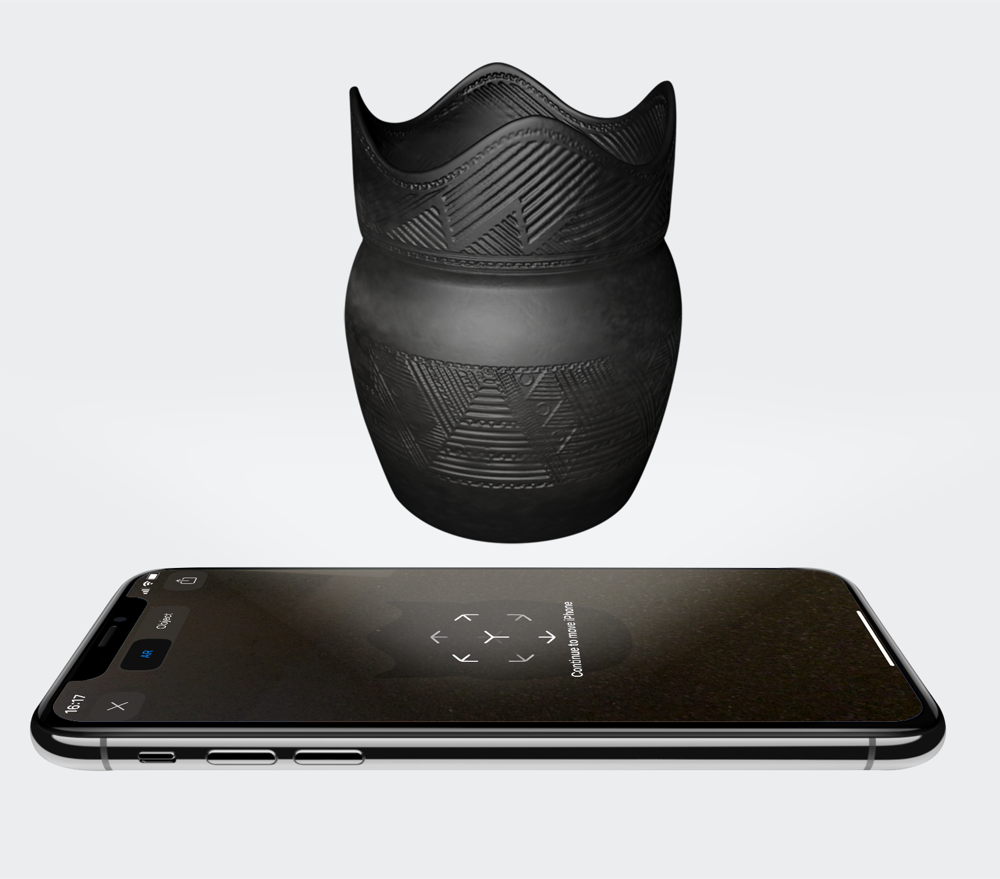

The Museum AR App
The museum AR app is an Augmented Reality application that merges the real and digital world allowing us to interact with the Lawson site and archaeological discoveries from 500 years ago. Download now and start exploring
Steps to
AR App Experience

To start the AR experience, it is required to have IOS and safari, which is where the app will launch by default. QR codes will be displayed around the Lawson site to be scanned and the user will be able to view and interact with different 3D archeological artifacts
1

Download the App
2

Scan the QR code
3